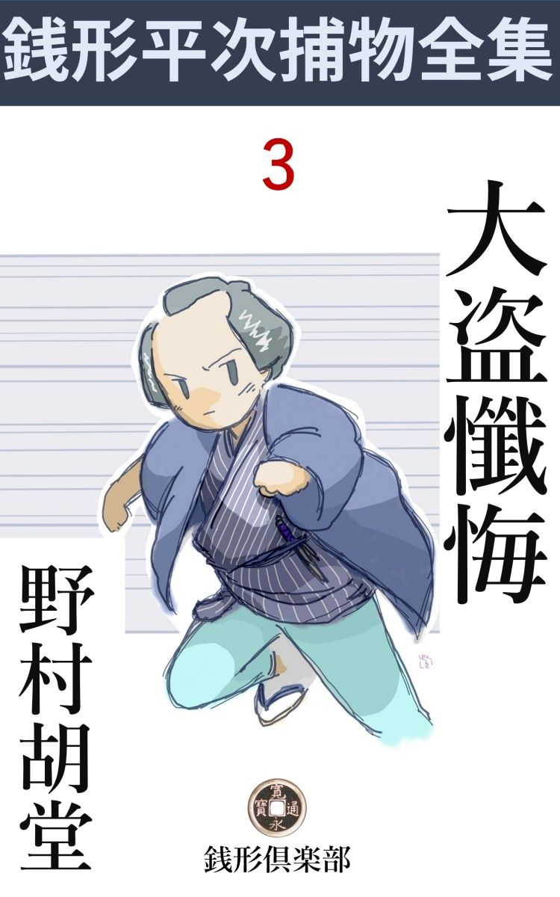
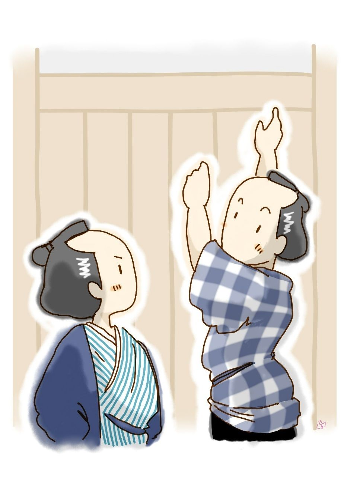

| 大盗懺悔: 銭形平次捕物全集第３話 (銭形倶楽部) | |
| 野村胡堂 | |
| ZENIGATA CLUB (2018) | |

一
人間業 では盗めそうもない物を盗んで、遅くとも三日以内には、元の持主に返すという不思議な盗賊が、江戸中を疾風 の如く荒し廻りました。
「平次、御奉行朝倉 石見守 様から厳 い御達しだ、------近頃府内を騒がす盗賊、盗んだ品を返せば罪はないようなものではあるが、あまりと言えばお上の御威光を蔑 しろにする仕打だ。明日とも言わず、からめ取って来い------と仰しゃる、何とか良い工夫はあるまいか」
南町奉行付、与力筆頭笹野新三郎、自分とは身分が違いながら、親身のように思っている捕物の名人銭形の平次に、こう打ち明けて頼み込みました。
「へエ、------私も考えないじゃ御座いません。盗んで直ぐ返すというやり方が第一気に入りません。恋の附文、貧の盗みと言う位で、食うに困っての盗みなら、悪いながらも可哀想とも思います。盗んだ品を翌る日返すのは、盗みを道楽にしている人でなきゃア、私共を翻弄 ているに相違御座いません、何とかしてあの野郎をフン捕まえなきゃア、銭形の平次も世間へ顔向けがなりません」
平次は、日頃の温厚な様子にも似ず、ツイ拳固 で膝を叩きながら、縁側の敷居際までにじり寄ります。
「お前がその気なら、遠からず捉 まえられるだろう------少しは心当りがあるだろうな」
「恥ずかしながら、何の手掛りも御座いません」
「女泥棒だというが、本当だろうな」
「それも当にはなりません。盗んだ品を返しに来るのは、目の醒めるような美しい新造 だって言いますが、それが盗むにしちゃ、手際が良過ぎます」
「と言うと」
「鍵や錠 を苦もなく外すのは兎も角として、一丈も一丈二尺もある塀を飛越したり、長押 を踏んで座敷へ忍び込んだり、とても女や子供に出来る芸当じゃ御座いません」
「フーム」
笹野新三郎も、銭形の平次も、近頃人も無げに出没する怪盗------風の如く去来するから世間では風太郎と言っておりますが------には全く手を焼いてしまいました。
「たった一つ、仕残した手段 が御座います」
「どんな事だ」
「謀事 は密なるを要すって申しましょう。もう二三日お待ち下さいまし」
「ハッハッハッ、平次は思いの外学者だな」
「へエ------」
苦味走った好い男の平次も、笹野新三郎に逢っては頭が上がりません。
二
「親分」
「何だガラッ八か、騒々しい」
「ガラッ八は情けねえな、------御注進、御注進とお出でなすったんで」
「気取るな、一体何がどうしたんだ」
平次は落着き払って、子分のガラッ八の顔を見上げました。
「昨夜風太郎が入りましたよ」
「何処へ」
「浅草の隆興 寺 」
「何を盗った」
「本堂の奥のお厨子 の中から三寸二分の黄金仏、大日 如来 」
「罰当り奴 」
「親分、あっしが盗ったんじゃありませんぜ」
「手前 に盗れる訳もねえやな、案内しろ」
「親分が行って下さりゃ、ガラッ八も、心丈夫だ。こう来なせえ」
「馬鹿にするな」
藍微塵 の素袷 、十手を懐に隠して、突かけ草履、少し三枚目染みる子分のガラッ八を案内に、銭形の平次は浅草の隆興寺へ飛んで行きました。
三寸二分、金無垢 の大日如来というのは、本堂の奥に安置した教祖の木像の胎内 仏 で、別にお厨子を作って見えるところに安置したのは、少しでも寺内を賑やかにしようと言う住職の商売気、そこを見込んで怪盗風太郎が、昨夜一と晩のうちに盗み出して仕舞ったのです。
風太郎に逢っては、鍵も錠も問題ではありません。
住職に逢って、愚痴 やら繰り言やらを聞いた平次は、あとは調べるでも探すでもありません。ケロリとして、庭に出ると、寺男を捉まえて小半日植木の講釈などをした挙句 、今度は本堂の中に入って、寺相応の彫刻やら額やら絵やらを眺めて、お厨子の方などは振り向いて見ようともしません。
「親分、真気 になって捜してやっておくんなさいまし。あの黄金仏がなくなりゃア、本山は申すに及ばず、檀家 中へ申訳がないから、傘一本で寺を明け渡さなきゃアなるまいと、住職は萎 れ返っておりますぜ------親分」
「わかったよ、それより、どんな者がこの寺へ出入りするか、一々見張っていな」
「へエ------？」
「風太郎の仕業なら返すに極っている。どんな人間が持って来るか、俺はそれが知りてえ」
「なアーる、親分は親分だけの勘考 だ、返しに来た野郎が取りも直さず盗んだ野郎って事になりますね」
「まアね」
「ようし、こうなりゃ蟻 の行列だって、見のがすこっちゃねえ」
ガラッ八は二つの眼玉を剥いて見張りましたが、さて不審と思うような人間は一人も出入りしません。
無事に一日を過して、念のためにその辺中を探して見ると、本堂の賽銭箱の側に、紙に包んだお捻 りが一つありました。何の気もなく開けて見ると、その中から現れたのは、金色 燦爛 たる三寸二分の胎内 仏 ------大日 如来 です。
「あッ」
「何時の間に持って来やあがったんだ」
さすが銭形の平次も驚き呆れるばかり、朝から多勢来た参詣の男女のうち、どれが怪盗風太郎なのか、全く以て見当も付きません。
三
翌晩襲 われたのは、本郷春木町の質屋で上総屋重兵衛、どうして八重の締りを解いたか、表口の厳重な潜 りを開けて、店格子を乗り越え、小僧達の頭の上を跨 いで、奥の一間に通り、主重兵衛の枕元に置いた用 簞 笥 の中から、これも錠前を綺麗に開けて、小判で三百両、切餅を十二ほど持出されてしまったのです。
当時三百両と言えば一と身代と言っても宜いほどの大金、上総屋重兵衛蒼くなって訴え出ました。
「風太郎の仕業なら二三日のうちに返って来るだろう。その間俺を邪魔でも帳場へ置いちゃくれまいか」
「へエ------、それはもう願ってもないことで、第一盗賊の入った後で、店の者も暫らくは怖 がってなりません」
重兵衛は大乗気 で引受けてしまいました。ガラッ八には用心のために外の路地を見張らせて、合図があったら飛出すことにし、銭形の平次は、その儘上総屋の帳場に坐って、来る客来る客に鋭い眼を配りました。
客は平常 の通りやって来ますが、さて風太郎らしいのは一人もありません。夕刻の立て込む真っ最中、至って粗末な様子をしておりますが、如何にも若くて美しそうな女が、店格子の前へすわり込んで、
「お帳面を忘れて来ました。済みませんがこれをここへ置かして下さい、ちょいと取って来ますから」
一人言 のように言って、ヒョイと暖簾 を潜ります。
「あ、そこへ置いて行っては困ります」
と言ったが及びません。
番頭の注意を背に聞いて、外へ飛出してしまった若い女は、それっ切り戻っては来なかったのです。
「おや、可怪 しいぜ。あの包みを持って来て見せな、風太郎と言うのは矢張り女かな」
銭形の平次もまことに迂遠 千万、この時漸く気が付いて、女が置いて行った包みを開いて見ると、中からは小判が三百両、切餅の封も切らず、盗られた時のまんま、そっくり入っていたのです。
「あッ」
驚きに驚きを重ねるばかり、怪盗風太郎一味には若くて美しい女がいるという事を確めた以外には平次ほどの者も何んにも摑んでおりません。
四
それから三日目有名な茶人繁 野 友白 のところへ忍び込んで、さる大名から預った名物ものの茶碗を盗んだものがあります。名物ものと言っても、それは祖先の誰 某 公 が朝鮮役の功労で豊太閤から貰ったという由緒 付 のもの。伊達政宗がひどく羨 やんで、岩代半国と代えようと申込んだが、到頭譲らなかったと言う、天下稀覯 の大名物です。
これを盗まれては、繁野友白首でも縊 らなければ追っ付きません。唯一の頼みは、盗んだのが近頃府内を騒がす怪盗風太郎ならば、三日とたたない内にきっと返してくれるだろうと言う一事だけ、友白は萎 れ返りながらも、それを心頼みに、二日まで空しく待って見ました。
今日は三日目となると、いても起ってもいられません。風太郎も名物の茶碗を惜しんだものか、三日の昼過になっても返して来ず、友白はいよいよ土 壇 場 に坐った心持で、日頃の落着きも失って、奥と門口との間にお百度を踏んでおります。
銭形の平次も三日詰め切りましたが、さて何の役にも立ちません。風太郎の手口は百も承知ですから、風の如く通って歩いた後を嗅いだところで何の匂いも残ってはいず、この上は、例の通り品物を返しに来るのを待ち伏せて、有無 を言わさず縛り上げる外はなかったのです。
風太郎が、ここの門を入りさえすれば、どんなに姿を変えていても、平次の捕縄を免 れようはありません。が三日目の昼過ぎまで待ち呆けを喰わして、何の音沙汰もないのはどうした事でしょう。いよいよ茶碗を返してくれなければ------と思うと繁野友白最早生きた空もなかったのです。
未刻 下 り、やがて申刻 にも近かろうと思う頃、お勝手口へフラリ人の影がさします。
「それッ」
と行って見ると、見知り越しの隣の男の子、風太郎如何に神出 鬼没 の怪盗でも、こんなに小さくなれッこはありません。
「叔母様、これ粗末なものですが、皆さんで召上がって下さいって------」
言いつかった口上通りを取次いで、友白の妻の前に出したのは丼 へ入れた饅頭。
「それは御丁寧に有難う御座いました」
取り込んでいるので、気を利かしてお茶受けを持って来てくれたのだろう------そんな事を考えながらヒョイと見ると、饅頭を入れた丼と見たのは、三日前に盗まれた名物の茶碗。
「あッ、これはどうだ」
そこへ来合せた友白は饅頭を投 り出して、茶碗を掻い抱くように、右から左から、ためつすかしつ、鵜 の毛で突いた程の瑕 も見落さずと調べています。
「坊っちゃん、ちょいと待った」
平次は飛付いて、危うく隣の子を押えました。
「好い子だ、あの饅頭はどこから持って来たか、教えておくれ」
「おいらのせいじゃないや、放しておくれよう」
物々しさに怯 えて泣き出しそう。
そこへ友白の妻やら、隣りの主人やらが来て、宥 めすかしながら聞くと、路地の外で若く美しい女の人に頼まれたとだけは判りましたが、子供のことで、年頃も人相もはっきりした事は言えません。
人間業とは思えぬ巧妙 精緻 な風太郎の手口を見ると、決して二人や三人の仕事ではなく、異常な頭脳 と体力を持ったたった一人の仕業に相違ないということがよくわかります。して見ると、盗んだ品物を返しに来る、あの若くて美しい女というのが、怪盗風太郎本人でなければなりません。
一体、何のために盗んで、何のために返すのでしょう。返って来た小判や茶碗を見ると、疑いもなく元のままの真物 で、贋物と摺り替えた形跡は少しもなく、あんなに骨を折って盗った癖に、鐚 銭 一枚身に着けないのですから、この泥捧の目的ばかりは全く見当も付かないのでした。
怪盗風太郎と言うのは、若くて美しい女だそうだ------という噂は、その日のうちに江戸中に拡 がってしまいました。
五
「平次、又風太郎だ」
「へエー、今度はどこへ入りました」
与力笹野新三郎に喚 び付けられた平次、面目次第もなく差し俯向きました。怪盗風太郎が江戸を荒し始めてからザット三月、江戸中の岡っ引が、腕に撚 を掛けて競 いましたが、何としても捉まえることが出来ません。特に捕物の名人とか何とか言われている銭形の平次、与力筆頭笹野新三郎から特別の言葉があっただけに、穴があったら入りたいほど恥じ入っております。
「今度は少し困った事になった」
「と仰しゃると」
「小日向 に屋敷を持っておられる赤井左門殿、二千八百石を食 んで、旗本中でも屈指の家柄だ。知っているであろうな」
「殿様は四十がらみの立派な方、尚上様の御覚えが目出度いという評判で御座いますな------よく存じております」
「それなら話し宜い。実は------その赤井左門殿のところへ風太郎が入った」
「へエ------」
「盗ったのは物もあろうに、上様 お声掛りで勘定奉行から引渡された千両箱が二つ」
「エーッ」
これには平次も驚きました。千両箱が二つと言うと、金の相場で今日の四百万円位、物価の比例で割り出すと四五百万円にも当る大金です。
それに、この千両箱は並大抵の品ではありません。尚上様家光公が、京都の空与 上人 をことの外御信心で、上人 のため洛北に一宇 の堂を建立 するため、二千両の寄進に付きましたが、表沙汰になると、何かと手続きが面倒、そっと勘定奉行に内意を含め、日頃目を掛けている安祥 旗本中でも家柄の赤井左門を使者に立てて、別に家光公直々の祈願文を認 め、二千両の大金と一緒に上方へ送ることになっていたのです。
赤井左門の出発は来月の一日、あと七八日の間、御 墨 附 と二千両の大金を、奥の一と間に飾って、寝ずの番を附けるようにして守護したのですが、どこに隙があったものか、一と晩のうちに、千両箱二つ煙の如く消えてしまったのです。
御墨附が無事だったのは、不幸中の幸いですが、手元不 如 意 の赤井左門が、八所 借 をしたところで、二千両という大金の工面が付きません。出発の日までにこの金の工面が付かなければ、赤井左門腹を切っても申訳しなければならぬ仕儀、工夫に余って、日頃昵懇 にしている笹野新三郎に相談をして見ました。町方与力は係りが違いますが、若年寄に訴え出たところで、どうにもなるものではなく下手 に表沙汰にすると、腹切道具ですから、筋違いながら町方の新三郎に持ち込んで来たのです。
「こう言うわけだ。平次、一と骨折って見てはくれまいか」
笹野新三郎、改めて若い平次の顔を頼母 し気に見詰めるのでした。
「それはお気の毒なことで御座いますが、風太郎の仕業と決まれば、三日経たないうちに戻って参りましょう」
「それがいけない」
「と仰しゃいますと？」
「盗られてから今日が五日目だ。さすが風太郎も、二千両という大金に眼がくれたと見えるな」
「そんな事は御座いません」
「お前は大層風太郎の肩を持つが、返って来る見込でもあると言うのか」
「兎に角、赤井様のお屋敷の中を拝見さして頂きたいものですが、お言葉添えを頂けますで御座いましょうか」
「それは何でもない事だ。後刻平次と言う御用聞を遣 しましょうと、はっきり断ってある」
「それでは一と走り」
「あ、これこれ平次、赤井殿の出発の日取りはあと三日の後に迫っている。それまでに千両箱が二つ揃って返らないと、お気の毒ながら赤井殿は腹を召さなければならぬ。解ったろうな」
「仰しゃる迄も御座いません。今度は平次も死物狂いで、キット風太郎を引っ捉まえて参りましょう」
銭形の平次は八丁堀から小日向へ、初夏の街 を大汗になって駆け付けました。
六
旗本赤井左門は、この時四十二の厄年 、家柄も人品も不足のない人物ですが、少し癇癖 の強いのが瑕 で、若い時分には、それでいろいろ問題を起しましたが、四十を越すとさすがにそれも納って、近頃は尚上様家光公の側近くに仕えて重宝がられております。
「平次とか言ったな、飛んだ手数を掛けるが、何分宜しく頼むぞ」
「へエ------」
二千八百石の殿様から、泥棒の手口を聴くわけにも行きません。平次は一度左門の前を滑って、用人の足尾喜内から、何彼とその日の様子を聴き取りました。
盗まれたのは小判で二千両、これは型の通り四方 金具 の厳重な箱に入れられて、御墨附と一緒に奥座敷の床の間に飾り、隣の間には足尾喜内や家中の若侍、若党などが交代で寝ずの番をしておりました。
箱一つの重さは中身の黄金 だけで四貫目、箱を加えると五貫目になりますから、二つ抱えると十貫目、余程の力がないと持ち出せません。
門も木戸も内から鎖 されたままになっていたと言いますから、邸内に手引の者がない限り曲者は塀を越えて逃げたものと思わなければなりませんが、邸内に住んでいるのは、赤井左門の家の子郎党達ばかり、草履 取 や中間まで、千葉の領地から呼んだ正直者ばかりですから、そんな大それた人間はいる筈もありません。
そうすると曲者は、五貫目の千両箱を二つ抱えて、一丈あまりの高塀を越して逃げたことになりますが、これは一寸人間業では出来そうもない離れ業です。まして、世間の評判通り、風太郎が若くて美しい女だとしたら、一体どんな事になるでしょう。
平次は腕を拱 ぬいて考えました。
「ガラッ八、手前 その塀へ這い昇って見な」
「へエ------」
「身体も気も軽いのが自慢のお前じゃないか、それ位の事は出来るだろう」
「出来ねえことはありませんが、泥棒の真似は気がさすな」
「何をつまらねえ、気取ったって褒 めちゃやらないよ」
ガラッ八到頭あきらめて、塀へ飛び付きました。高いと言っても板塀ですから、内側からなら這い登れないことはありません。

「よしよし、塀の越しっぷりが宜いと思って、悪い料簡を起すな」
「親分、冗談を言っちゃいけねえ」
「待て待て、今度はこの石を二つ持って越すんだ、抱えても背 負 っても構わねえ」
「こいつア無理だよ、親分」
「まア、やって見な、無事に越せたら石は手前にやる。家へ持って帰って、沢庵 の重しにでもするが宜い」
「からかっちゃいけねえ」
平次がこんな冗談を言ってる時は、一番真剣な事を百も承知のガラッ八は、素直に二つの石を背負って塀を越そうとしましたが、十貫目の荷物を背負っては、どう工夫してもこの塀を越せません。ガラッ八が危うく引くり返りそうになるのを抱き止めて、
「よしよしもう沢山だ、飛んだ骨を折らせた。サアこっちへ入るがいい」
引揚げると縁側から見ている赤井左門の前へ小腰を屈 めました。
「殿様、千両箱はお屋敷から持出されちゃいません」
「何？」
左門は今更眼を見張ります。
「三日経って返して来ないのも可怪しいが、------風太郎だって鬼 神 ではないでしょうから、あの塀を越すにはどうしても一度千両箱を下へ置くか、塀の上へ載せるか、向う側へ投 り出すかしなければなりませんが、風太郎が越したろうと思う辺には、そんな跡は一つもありません。下はあの通り土の柔 かい畑 で、重い箱を置けば形位はつきます」
「フーム」
「風太郎は恐ろしい早業ですが、女だろうと言われている位で、決して大力では御座いません。二つの千両箱はお屋敷の外へ持出されていないと申すのは、こうしたわけで御座います」
「成程、そうもあろうな、餅は餅屋だ------ところでその箱はどこに隠してあるだろう。屋敷の中は大抵探した積りだが------」
赤井左門もすっかり乗気になりました。
「あの泉水 の中を御覧なさいましたか」
「ウーム、それは気が付かなかった」
それッと言うと、待て暫しはありません。中間若党が水門を引っこ抜いて、水もろくに引かない内から飛込んで掻き廻すと、すっかり泥を冠 っておりますが、間違いもなく二つの千両箱は、その中に沈められているのでした。
七
この喜びは長くは続きませんでした。千両箱を洗い清めて封 印 を直して、明日はいよいよ出発という晩、赤井左門の邸はもう一度怪盗に襲われたのです。
今度盗られたのは、空与 上人 に与える筈の、将軍家光公の御 墨 附 、これは千両箱と違って掛け替がありませんから、赤井左門も全く弱ってしまいました。
「二度まで赤井家を襲うというのは容易でない。これは怨 みだな、平次」
「私もそう気の付いたところで御座いました」
「何しろ、御墨附は容易でない。御苦労だがもう一度行って見てくれ」
「へエ------」
そう言われなくてさえ、張り切った若駒のように飛出そうとしている平次、いよいよ怪盗風太郎と、人交えもせずに最後の腕比べをしてやろうと思うと、思わず武者顫いが全身を走ります。
笹野新三郎に別れて、八丁堀の往来へ出ると、ポンと弾き上げたのは、例の銭 占 いの青銭、落ちて来るのを平 掌 に受けて開くと、それが形 。
「------吉と来やあがる、しめ、しめ」
両袖を合せてポンと叩くと、そのまま弥造 を拵えて、小日向へ早足になります。
赤井の屋敷に着いて、足尾喜内に案内さして、邸内隈 なく探しましたが、今度は千両箱と違って、泉水に沈める筈もなし、全く見当が付きません。
主 の左門に逢って、
「人に怨を受ける覚えは------？」
と聴くと、若い時は名題の癇癖 で、随分横車を押し切っているから、どこから怨を受けているか、見当も付かないと言う有様、今度は赤井左門も萎 れ返って、口をきくのもおっくうそうです。
「八、外へ出ろ」
「へエ、喧嘩が始まるんですか」
「馬鹿ッ、そんな暢気 な話じゃねえ。いつぞやお茶の宗匠の饅頭でしくじった事を知ってるだろう。外を見張れ、家の中には用事がねえ」
「成アる------親分は矢張り親分だけの考えがあるね」
「馬鹿にするな」
二人は表と裏に分れて、二つの入口を見張りました。平次は荒物屋の店先を借りて裏門を見張り、ガラッ八は草っ原に寝転んで表門を見張ることにしたのです。
それから何刻 かたちました。平次は荒物屋の女房の好意で日蔭にも渋 茶 にも有り付きましたが、気のきかない野良犬のように、小日向の草原に潜り込んだガラッ八は、真上から初夏の陽に照りつけられて、気が遠くなるほど干されてしまいました。
陽が漸くかげり始めた頃、近所の悪戯ッ子らしいのがチョコチョコと赤井左門の裏門へかかりました。
ヒョイと見ると、手には何やら紙片を持っている様子。
「あッ」
平次は荒物屋の店を飛出すと、その子供には眼もくれず、街の左右に素早く眼を配りました。
右手、茗荷 谷 へ抜ける方に、一人の女が悪戯ッ子の姿をじっと見送っております。
「あれだッ」
と思うと一足飛びに------
それを見た女は、ハッとした様予で曲り角から吸われるように姿を消してしまいました。
「おのれ、逃してなるものか」
その間僅かに三十歩、平次が道の角へ飛付いた時は、逃げ行く女の姿はなくて反対に、近所の者らしい娘が一人、向うから来てハッと平次に鉢 合 せしそうになりました。
「アッ」
二人は危うく飛退きました。
「ちょいと伺いますが、今こっちから逃げて行った若い女を見ませんか」
「いいえ」
女はニッコリしたようでした。狭い道を、平次とすれすれに通って、向うへ行こうとするのを、
「待った」
平次は後ろから帯際を取って押えました。
「あれッ」
「騒ぐな、お前は風太郎と言われる曲者に相違あるまい」
「エッ」
「逃げる振りをして、逆に取って返した手際は、尋常の者には出来ない事だ、それに、お前の声に覚えがある」
春木町の上総屋の帳場で、平次はこの女の声を一度聞いているのでした。
「いいえ違います」
「神妙にしろ」
銀磨 きの朱房の十手は、平次の手にキラリと光りました。
「ガラッ八来い、捕ったぞ」
「おッ、そいつは有難てえ。この上夜露に打たれると、人間のカキ餅が出来そうだ」
ガラッ八は表の草 叢 の中から飛び出して、忠実な犬っころのように駆けて来ました。
「いよう、こいつは大した代物だ、風太郎てえのはこの新造ですかい」
「そうだろうと思う」
「泥棒さしておくのは勿体ねえ」
「馬鹿野郎、何を言う」
しかし、平次もガラッ八の言葉を承認 しないわけには行きませんでした。後ろ手に縛られて、夕陽の中に立った娘の美しさは、眼も覚めるばかり。解き下げて無造作に束ねた髪、地模様の綸 子 の帯、町家風の木綿物の小綺麗な袷も身に合って、何とはなしに清らかさと美しさが溢 れるのでした。
八
お墨附 は返った------、曲者は捉まった。赤井左門の屋敷は夕陽に咲いた花のように陽気になりました。
しかし、それもほんの暫く、女が子供に托 して返した御墨附を受取った赤井左門、手を清めて改めると、御墨附に似せてはあるが、真っ赤な偽物 の紙片だったのです。
「おお平次を呼べ」
縄付の娘を中間部屋に伴れ込んで、いろいろ責め問うている平次は、即刻赤井左門の前に呼出されました。
「平次、御墨付は贋物だぞ」
「エッ」
「出発は明日に迫っている。この上手間取って、万一表沙汰になっては、過 怠 の罪は免れ難い。腹を切るのも易い事だが、上様御墨附を汚した上、赤井の家名を断絶さしては、何としても忍び難い。頼むぞ平次」
二千八百石取の殿様が、岡っ引風情に手を合せないばかり。
「------」
平次は黙然として考えました。
「明朝までに御墨附が返らなければ、生きてお前に逢うのもこれ限りだ、------その娘とやらを拷 問 にかけても、御墨附の在所 を訊してくれ」
少し乱暴なようですが、事件を表沙汰にして、町奉行所へ持って行かれないとすると、これも一つの考えようでしょう。
「宜しゅう御座います殿様、御庭先を拝借して、あの娘を拷問にかけましょう。どうぞお立ち合い下さいまし」
平次は退って娘を庭先に引出しました。赤井左門から命令があったものか、庭先には高張 提灯 をかかげ、番手桶を積み荒 筵 を敷き、俄か事ながらすべてお白洲 その儘に作って、往来に向いた庭木戸を真一文字に開かせました。
表 沙汰 になるのを極端に嫌いながら、これは又何とした事でしょう。もっとも町内へは屋敷へ女賊が入って、大事の品を盗んで隠したので、その在所を白状させるためという触れ込み。退屈し切っていた、山の手特有の有閑階級人は、『そいつは面白い』と庭木戸から一パイに雪 崩 れ込みました。二千八百石取の旗本のすることで、その上有名な御用聞の銭形の平次が付いているのですから、こんな不法の折 檻 をとがめ立てる人もありません。
娘は庭の真ん中に敷いた荒筵の上に引据えられて荒筵を突き破って打ち込んだ青竹に、半身裸のまま荒縄で縛り上げられました。
沓脱 には赤井左門、沓脱の下には銭形の平次、ガラッ八と中間が責手で、この残 酷 な見物が幕を切って落されたのです。
「娘、その方は近頃世上を騒がす風太郎という盗賊に相違あるまい。この屋敷から盗んだ品をどこへ匿 した。いずれは町方与力の手に引渡して、仕置を願うその方が、その前に、この屋敷から盗み取った品だけは取り上げなければならぬ。サア、真っ直ぐに白状せえ」
用人の足尾喜内、少し屈った腰を延して、娘を縛った青竹の後ろを、竹刀 で力任せに引叩きます。
娘は猿轡 をはめられて、悲鳴も絶叫も漏らせないようにしてあります。が一つ竹刀で打たれる毎に、半裸体の上半身の白い肉がピクピクと顫 えて、荒繩に食い込まれた肩から胸をねじ曲げます。
「手ぬるいぞ喜内、もっと打て」
と赤井左門。
「私が代ってやりましょう。さア、娘」
平次は竹刀 を取って立ち上りました。この岡っ引にしては珍しく人間味のある男、『失策 平次』とまで綽名 される男が、縛った娘の若々しい肉を、自分から進んで打ち据えようとはなんとした事でしょう。
高張提灯の薄暗い灯の下に、五六十人も押し重った町内の人達も、あまりの苛酷 な情景 に眼を反 けて、非難の囁やきを波打たせます。
「さア、言え、言う気があったら、首を三つ縦に振れ、そうしたら、猿轡 を外してやる、大事の品を何処に隠した」
平次の竹刀は続け様に娘の背に鳴りましたが、娘は身もだえして苦しみながら、どうしても在所 を言おうとはしません。
「この上は殿様、この娘を五分試し一寸試しに斬ってやって下さい。そうでもしなければ口を開くような女じゃ御座いません」
「よし」
赤井左門は庭下駄を突っかけて降り立ちました。右手には新 身 の一刀、灯 を受けて焼金の如く凄まじく光ります。
九
「待った」
見物の中から飛出した男。
ガラッ八と中間を突き飛ばして、娘の前に大手を拡げて立ちはだかりました。
「何物？」
赤井左門の叱咤 を的面 に受けて、
「世間で言う怪盗風太郎とは俺の事だ」
臆 れた色もなく言って退けて、赤井左門と銭形の平次を屹と見据えました。年の頃四十五六、小作りで少し華 奢 な身体ですが、妙に抜目のない身のこなし、商人風とも遊び人風とも付かぬ身装 のうちにも、何かしら一脈の怪奇さがあります。
「曲者ッ、御用ッ」
飛付こうとするガラッ八を尻目に、
「騒ぐなガラクタ、名乗って出た位えだ、逃げも隠れもしねえ」
落着き払って懐へ手を入れます。
「風太郎とはお前だったのか、珊 五郎 、言い分があるなら聞いてやろう」
「お、さすがは平次、よく言った。下手にあがくと俺の懐の中で御墨附はズタズタになるぞ」
兇賊と御用聞は、ピタリと見合ったまま、お互の呼吸を測 っております。赤井左門も足尾喜内も、ガラッ八も、もう二人の眼中にはありません。珊五郎と言うのは、お蔵前で少しは名を売った遊び人、これが怪盗風太郎の正体とは、さすがに平次も予想外だったのでしょう。
「なア平次、お前なら話がわかるだろう、聞いてくれ、こう言うわけだ------」
「------」
娘を後ろに庇 いながら、珊五郎の風太郎は声を落しました。
「何の因果 か、俺には物を盗まずにいられねえ病気があるんだ。身体も軽く、知恵も人並にあるのが身の仇で、人間業で盗めそうもないものを見るとどうしても盗まずにいられねえ。これが持って生れた俺の弱気だ。------女房が生きている内はまだよかったが、三年前に女房に死別れてから、どうしても盗み癖 が直されねえ、知っての通り俺は暮しに困るわけじゃなし、金が欲しくて盗みをするわけじゃねえ、------今まで盗んだ金や品を、たった一つも身につけないのはそのためだ。娘は俺のこの癖 を心配して、いろいろ意見をしたがどうしても直されねえ、お仕舞にはあきらめて、俺の盗んだものを、自分で元の持主に返して歩いた始末だ。------風太郎というのは女泥棒だなどという噂を聞いて、俺はどんなに気を揉んだことか、平次察してくれ」
あまりの不思議な物語に、平次も左門も口がきけません。珊 五郎 はそれに構わず、悲痛に顔をふり仰いで続けました。
「ところが、たった一つ返されねえ品物があった。それはこの屋敷から盗った千両箱と御墨附だ。わけを話せば長いが、一口に言ってしまえば、ここにいる赤井左門は、若い時酒の上で、少しばかりの粗相を楯 に、隅田 堤 の花見の最中、俺を無礼討にしかけた事がある。幸い危いところで命だけは助かったが、その時受けたのがこの疵 だ」
顔をヌッと出すと、横疵の珊五郎と綽名 にまで言われた刃の跡が、四十男の額口から頬へかけて、斜に赤い線を引いております。
「俺が赤井左門に腹を切らせようと目論んだわけが解ったろう。------千両箱は重いから泉水へ沈めたが、それを見付けられたので、御墨附を盗んだ迄の事だ。娘が又後生気を出して、元の持主に返そうとするのは解り切っているから、わざと偽 物 の御墨附を拵えて娘につかましたのだ。------それが仇 になって、娘はお前達にこんな目に逢わされる事になったのは珊五郎一生の失策 よ、解ったか平次。------それにしても、縮尻平次と言われる人気者のお前が、若い娘をこんなムゴイ目に逢わせるのはどうしたわけだ。今までお前を買い被った俺が癪 にさわる、この------怨はきっと返してやるぞ、平次」
「珊五郎、よくその娘を見ろ。鵜の毛で突いた程の傷でもあったら、この平次は大地に手を突いて詫をする」
「何？」
「皆んなお前をおびき寄せる細工 だ。娘が捉ったと聞いたらお前はどうせここへ来ずにはいられまい」
「畜生ッ」
「さア、それで話は済んだ、御墨附を置いて、娘を伴れて帰れ。赤井の殿様は、あの通り若い時の過 ちを詫びていらっしゃる」
そう言われて振り向くと、なる程赤井左門は恥じ入る様子で珊五郎の方へ黙礼しておりました。
「本当なら縄を打って引立てる所だが、平次の眼の届かねえところへ行くなら許してやる。解ったか珊五郎」
「ウーム」
珊五郎は暫らく黙り込んで、青竹に縛られた娘の恙 無 い顔と、左門と平次の敵意のない顔を見比べました。
銭形平次は、こうして又縮尻 を一つ重ねました。風太郎と言われた怪盗珊五郎は、その場から行方知れず、赤井左門は翌る日都への旅路に上りました。
「平次、又盗賊を逃したそうだな、お前の道楽にも困ったものだ」
そう言う笹野新三郎の小言は、何と言う甘いなつかしいものだったでしょう。
「へエ------」
平次はその前にひれ伏して、一言もありません。
（編注）
作品中には、身体の障害や人権にかかわる、差別的な語句や表現が見られますが、本書が成立した当時の時代背景等が現代とは異なる古典的な文学作品でもあり、著者が故人でもありますので、底本のままとしました。ご理解、ご諒承のほどをお願い申し上げます。
著者---野村胡堂
挿絵---萩 柚月 © 2017
初出---「文藝春秋オール讀物號」昭和六年六月号 文藝春秋社
底本---「錢形平次捕物全集」第一巻 河出書房 昭和三十一年五月五日初版
編集・発行 銭形倶楽部